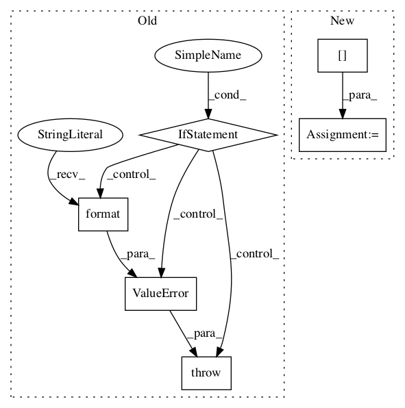

bcf6d0a188ee9ba868c1de01c347f813e3aaa35c,stellargraph/layer/graph_attention.py,GAT,__init__,#GAT#Any#Any#Any#Any#Any#Any#Any#Any#Any#Any#,636
Before Change
// check generator:
if generator is not None:
if not isinstance(generator, FullBatchNodeGenerator):
raise ValueError(
"{}: generator must be of type FullBatchNodeGenerator or None; received object of type {} instead".format(
type(self).__name__, type(generator).__name__
)
)
// Check if the generator is producing a sparse matrix
self.use_sparse = generator.use_sparse
else:
self.use_sparse = FalseAfter Change
// Copy required information from generator
self.use_sparse = generator.use_sparse
self.multiplicity = generator.multiplicity
self.n_nodes = generator.features.shape[0]
self.n_features = generator.features.shape[1]
if self.n_nodes is None or self.n_features is None:
raise RuntimeError(In pattern: SUPERPATTERN
Frequency: 3
Non-data size: 6
Instances Project Name: stellargraph/stellargraph
Commit Name: bcf6d0a188ee9ba868c1de01c347f813e3aaa35c
Time:
Author: null
File Name: stellargraph/layer/graph_attention.py
Class Name: GAT
Method Name: __init__
Project Name: tensorflow/agents
Commit Name: b5ae1c6bde39f5130c975992198f1f8ee5200f9a
Time:
Author: null
File Name: tf_agents/agents/dqn/dqn_agent.py
Class Name: DqnAgent
Method Name: _check_action_spec
Project Name: tensorflow/agents
Commit Name: 1bef8a0cb502401e33f8572897d981ef81a1a829
Time:
Author: null
File Name: tf_agents/bandits/policies/neural_linucb_policy.py
Class Name: NeuralLinUCBPolicy
Method Name: _action